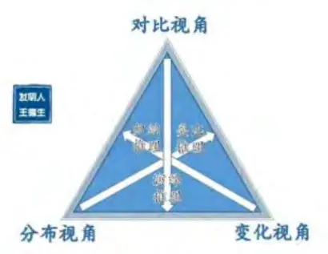
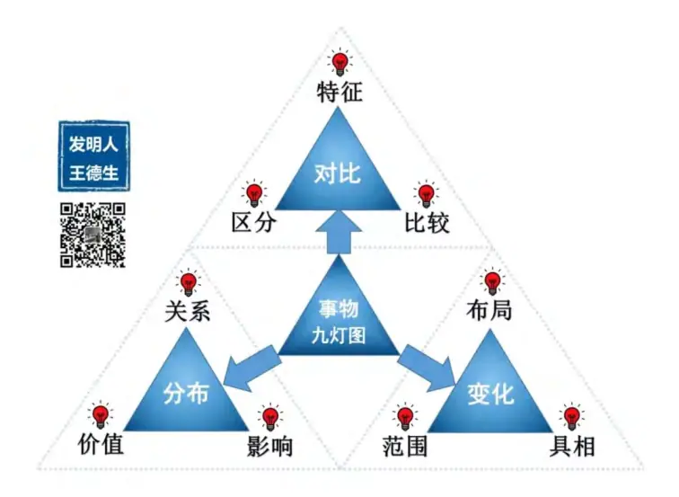
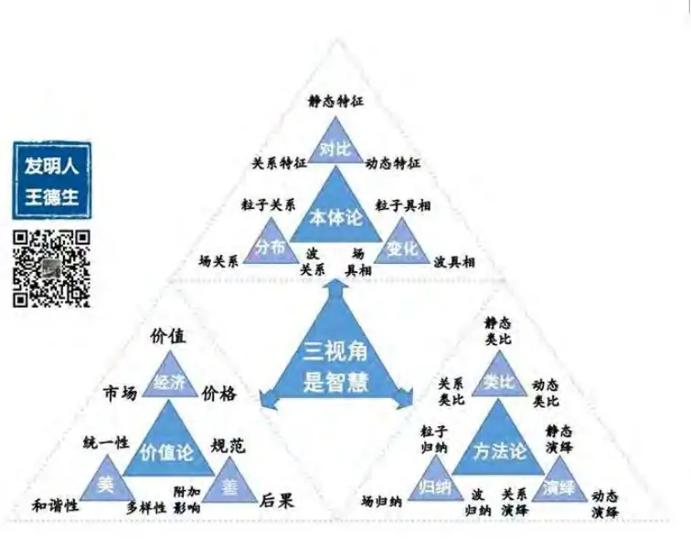
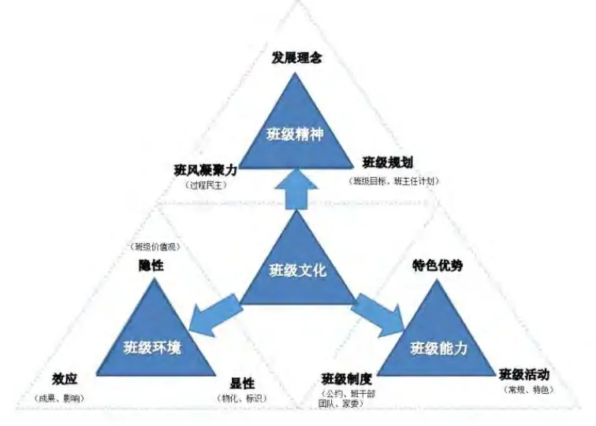
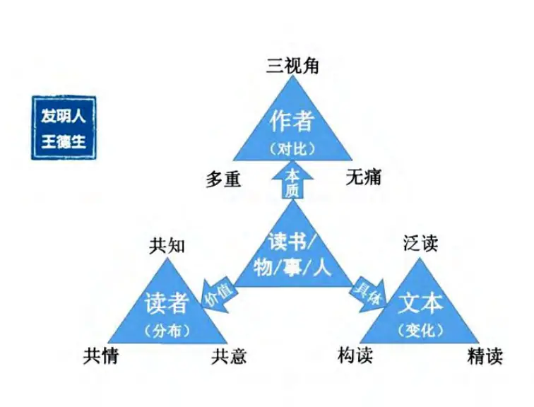
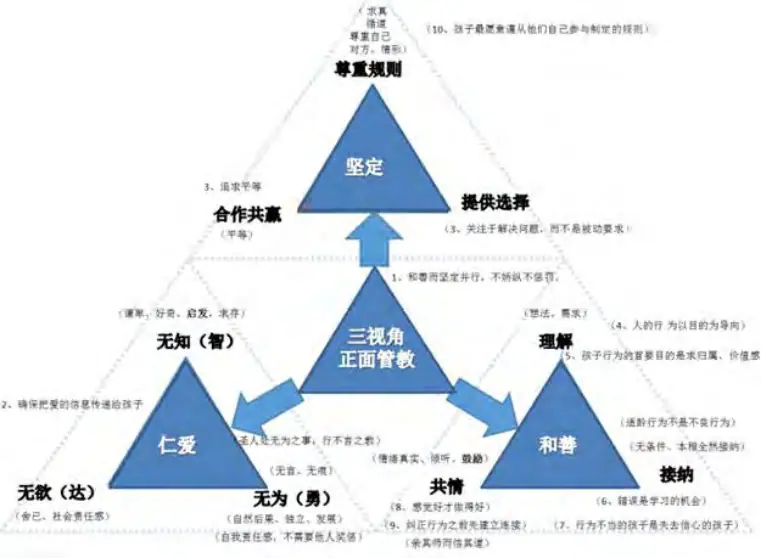
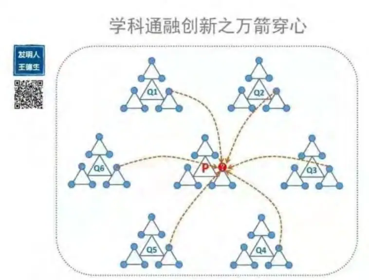
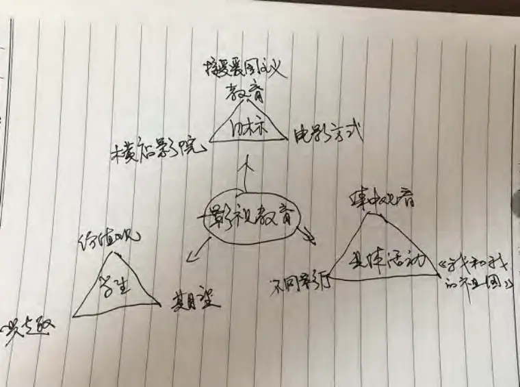
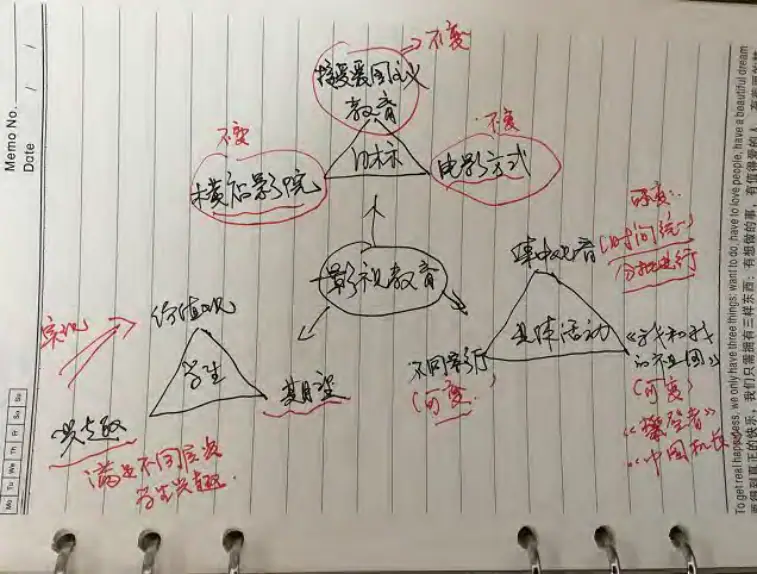
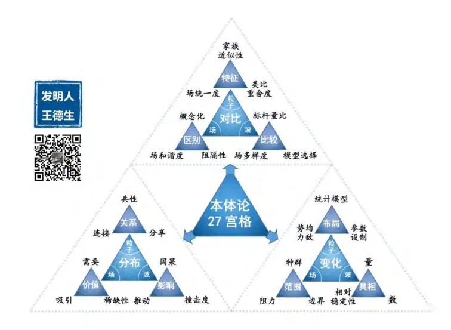

“三力”三问
“学习力、创造力、心智力”简称“三力”，是今年国庆湖南娄底三视角智慧学习的主要内容。
1.为什么说三视角是智慧？
2.如何把它应用到读书中？
3.如何运用三视角智慧进行创新？
这三个问题，是“三力”讲师资格考核的的笔试题！
一、为什么说三视角是智慧？
三视角是什么呢？当我们试图答“A是什么？”时，其实是对A作一个判断，把A看作一个概念，给它下定义。比如我们说A是B，B在这里也是一个概念。概念是具有相同特性的同类事物的集合，它由内涵和外延二部份组成，内涵是指概念的固有的本质属性，外延是指这种本质属性的具体表现，概念的内涵与外延二分法，把概念从其他事的关系中物割裂开来了。
但是三视角不是一个概念，所以我们无法从概念的世界里找到一个合适的词语来定义它。
虽然我们无法给三视角下一个确切的定义 ，但不代表我们无法去认识它！我们预设万事、万物、万理都可以从对比、变化、分布这三个视角去认识。而三个视角是必要的，不可缺少的，它们具有普遍适用性，三个视角之间的关系是互为条件，你中有我，我中有你，相互缠绕交织的，是三位一体的。透过任意一个视角都可以看到这个事物的整体。

对比视角就是指这一事物区别于他事的“身份”特征，它具有稳定性，为事物发展变提供了方向性，它回答的是这个事物是什么的问题。
变化视角是指这一事物的各种变体，或在某一范围内具体的变化表现，是这个特征的具体演绎。
分布视角是指这一事物在某个场里面与其他事物的相互关系，影响和彼此需要，它限制或推动这一事物在某一范围内的变化程度。
下面的九灯图更加清楚地告诉了我们三个视角的具体内容。

假设我们研究的对象是木材做的椅子，那么椅子与家用电器相比较，木材就是椅子的对比特征，而不同样款式的椅子就是椅子的变化视角，而椅子与摆在客厅里的电视机、风扇、冰箱等的关系，就是椅子的分布视角。
而认识一个事物，与不同的主体有关，即解释者有关，不同的人可能从不同的视角去认识一个事物，从静态的视角，也称为粒子的视角，动态的视角也称为波视角，还有场的视角，简称为粒子、波、场三个视角。加上事物本身的对比、变化、分布三个视角，就构成了某一事物的三视角九宫格。这就大大丰富了我们对事物的认知。因此三视角是本体论。
实际生活中我们可能面临很多需要解决的问题，所谓问题，就是问题所涉及的核心事物的三视角九宫格（甚至是27宫格）出现了残缺。解决问题实际上就是找到这些视角，形成解决问题的不同路径，对这些视角进行补全或修复，使之和谐。因此三视角又是方法论。而如何寻找，确定那条路径，又受到本体的分布视角的限制和影响，因此三视角又是价值论，三视角集本体论、方法论、价值论以一体，既能认识事物的本体又能根据不同的场合、条件选择合适的路径，有效地解决本体出现的问题，因此我们称三视角是智慧。

例如我在“三力”学习期间，由于投入大量的时间，以致陪家人的时间大大减少。太太开始抱怨说：有了三视角你都可以抛妻弃子了。这话意味着在“学习三视角”这件事的分布视角出现了不和谐，如何解决呢？
这件事的核心事物是太太对我“学习三视角”这件事的认知出现问题了，她只从“学习三视角”的静态视角去考虑，把我与过去作比较，得出一个结论：陪家人少了这个特征，机械地认为以后的日子都可能是这样的了。少了波的视角去认识学习这件事，后来我从波的视角来和她解释，“抛妻弃子“样的学习，只是暂时的，它会随着我对学习的掌握程度变化而发生变化，当太太增加了“三视角学习”波的视角时，问题就得到解决了。
运用三视角智慧无论是在亲子教育还是在日常工作中都是非常实用的。我们学校这学期要搞班级文化建设，我通过阅读相关文件和材料，建构以了“班级文化建设九宫格”

班级文化是一个班级生命体的灵魂，是班级成员知、情、意的共同特征的表现。它的本质是班级精神高度概括。班级文化的具体表现为班级的综合能力，而班级的环境是班级综合能力得以施展的场所及条件。
班级文化与学生的全人发展息息相关，潜移默化地影响着学生、教师、家长、学校，对滋养着学生身心灵的全面发展。
班级精神的核心是班级的发展理念，它解决了培育什么样的人的问题，而班级规划是班级理念得以具体落实的保证，发展理念给班级规划提供了方向，班级规范是否科学性、有效性有赖于整个班级的班风，是民主的还是专制的，是代表个人意志，还是符合多数学生的需求及身心发展规律，良好的班风和强大的凝聚力反过来会促进班级规划的合理性和有效性，而班级的规划主要由体现在班级目标的制定各班主任实际的工作计划中。
如何体现一个班的班级精神文，将班级精神文化落实到班级的日常的教育教学工作中？要通过考察这个班的班级整体的综合能力，区别一个班的班级能力，要从一个班的特色优势中去比较，而这个班的特色优势能力，是在日常的班级活动中得以体现，也就是这些能力和优势是通过班级的常规活动，特色活动中总结归纳出来的特征。
一个班要选择举行什么活动，如何开展，开展到什么程度，有什么期待的效果，这决定于这个班的班级制度，所有的活动都在这些制度的保障下进行的。
班级环境，给班级能力的展示提供了土壤和舞台。班级的隐性环境是指班级生命体的价值观，有什么样的价值观，会决定班级培养什么样的班能力，开展什么样的活动。制定什么样的班级制度，形成什么样的班级特色，而班级的价值观是通过班级的显性环境即物化来体现，例如班级标识，课室的物理环境等
班级所取得成绩、荣誉，对其它班级、学校甚至社会的影响，能反过来鼓舞和激励整个班集体的综合能力发展，带动学生个体的发展，朝着班级精神引领的方向去发展，去实现班级发展理念所期待的目标。
用三视角结构看“班级文化建设”这项工作，非法通透，而且浑然一体，既能诊断哪个环节出了问题，又能知道从何处，用哪种方法去修复，既知道如何做，又能知道为什么要这样做，真的非常实用。
二、如何应用三视角智慧到读书中？
把“三视角智慧”应用在读书中，我们称之为“三视角无痛多重读书法”。

它的对比视角是“三视角”，变化视角是“无痛”，分布视角是“多重”。读书的本质是要解构出文本中作者所要表达的事、物、理的三视角九宫格，（当然根据不同的需要，可以细化到27宫格等），从而使读者与作者建立“心”与“心”的连接。“无痛”是指阅读过程中遇到不理解或有疑问的地方，暂且搁下，不急于深入分析细节，而是继续保持往下阅读，目的是为了快速建立文本的整体框架，相当于是泛读。而“多重”则指进入精读的过程，对“无痛”过程中遇到的问题和疑问，结合上下文，联合多个视角进行推敲，找到自己的“先有概念”，与书中的相关概念进行比较，转构纳入为自己的知识体系，从而使自己的认知体系得到扩充和升级，补全作者没有提及到的视角，建构文本的完整的三视角九宫格。
用“三视角无痛多重”读书法，可以快速地抓住书中的主要内容，增加阅读的效率，通过建构文本的三视角九宫格，达到超作者是、超文本的境界。同时对如何挑选相关的类型的书籍，如何安排和优化读书的时间，都具有清晰的指导作用。
例如我在阅读《正面管教》一书时，我会通过读目录，前言，书评等快速通读整本书，然后画出它的三视角九宫图，当然在一次的阅读过程中，很难完整、准确地找到每个视角对应的元素，但恰恰是这些未知的视角元素，给我提供了进一步细读的方向，紧接着我以这些未知的视角元素为目标，去进一步细读文本，如果在这本书里我没找到自己需要的元素，我就会去阅读其它与正面管教相关的书籍，直到找齐这些元素，整个过程有点像寻宝的感觉。也类似于主题式阅读。下图是我在阅读《正面管教》等书籍后，进行解构后建构的“三视角正面管教”九宫格图，通过这个结构，把正面管教的八大主要理念连为一个整体。

三视角无痛多重读书法，除了应用在阅读书本中，也可运用于听一个报告或学习专题讲座，都是非常有效的。
我曾用“三视角无痛多重读书法”去听一个关于如何开展劳动教育为主题的讲座，边听，边对专家讲话的内容进行解构、建构。快速地画出“劳动教育”的三视角九宫格，对暂时没找出来视角元素先搁在一边，带着这个问题去捕捉专家接下来讲的内容，这样就能预测到接下来专家会讲些什么内容，如果专家没讲到的视角，自己就根据现有的认知和经验进行补充，并添加到三视角九宫格图中，这个三视角九宫格图，就好像一个罗盘，帮助我找出专家的对“劳动教育”哪一个视角缺失或不足，通过检查各个视角之间的内在的逻辑关系，还能诊断出专家某一视角缺失的，而且还能找这种错误的原因什么。
例如在本次的讲座中，专对劳动教育的对比视角模糊，只强调了如何实施与及意义，即一直在谈论“劳动教育”这个主题的变化和分化视角，由于大家对“劳动教育”这个主题的对比视角不太清楚，无法很好地区分“劳动教育”与“综合实践活动”本质特征，会后很多老师对如何具体进行实践觉得还是很晕很乱。当我用三视角智慧的系统思维，视角思维去解读时，我对整个劳动教育的认识有了一个透视感 ，掌控感 ，引发了我很多有创新的思考。
三、如何应用三视角智慧进行创新？
运用三视角智慧进行创新，也是一件令人快意的事。我们知道事物彼此之间都存在着某种联系，要研究或认识某一个事物，要放在一定的场中去进行，看它与这个场中的其他事物之间的相互有关系，影响和价值，也就是研究一个事物离不开它的分布视角，场视角。而我们预设是成事万物万理的本体结构都是三视角结构，那么研究一个未知的本体，就可以从已知的某一本体出发，进行类比通融得到猜想，再进行证伪。三视角创新思维的应用可以看作是综合运用类比、演绎、归纳将一个本体旧的三视角结构变为新三视角结构过程。

我曾在工作中尝试过应用三视角创新思维。每一年我校都要组织学生进行外出观看电影活动，通过影视活动对学生进行爱国主义、社会主义核心价值观的教育。今年的影视活动刚好计划在国庆后进行，我初步拟定观看《我和我的祖国》这部电影，但通过调查，发现很大一部份学生在国庆期间已经观看过这部电影了，这怎么办呢？看还是不看呢？换其它影片吧，也有学生观看过了。
行政会上大家讨论意见分为二种，一种认为这是学校统一组织的集体活动，看过的学生再看一次也无妨。另外一种认为这样对观看过的学生来说意义不大，建议暂时不组织观看，等待下个月有新电影再观看。也就是要么看，要么先不看这二个选择。大家的思路陷入了二元的胡同中，怎么办？我在会议本上写上了“影视教育”作为核心词，然后开始画出它三视角九宫格结构图，当我把九个元素列出来（虽然这些元素有可能不太准确，但随着学习功力的加强，我相信这个水平会慢慢提高的），并逐一去思考当中的元素时，我的思路一下打开了。

当目标视角要保持不变，那么我可以变化视角即具体活动中去考虑变通，比如说集中观看可以变为分年级分批组织，时间的安排就自由了很多，具体活动的变化视角也可以变，即可以选择几部不同的电影，例如《中国机长》、《攀登者》等，或者具体活动的分布视角上作改变，比如不同影厅可以放不同的电影，这样一来，学生好可以根据自己的兴趣和期待来选择，什么时间、哪个具体的影厅来观看自己感兴趣的电影，从而接受爱国主义教育 ，来促进自己的价值观的建立。

三视角创新思维，让我从二无思维的困境中摆脱出来。创新性地解决问题的感觉令人特别振奋。将它运用到亲子教育中，能摆脱以前一味说教、灌输的方式，不断地朝“无痕教育”迈进，通过“分享、共创、同荣”的方式，增强了亲子之间的爱的连结。
